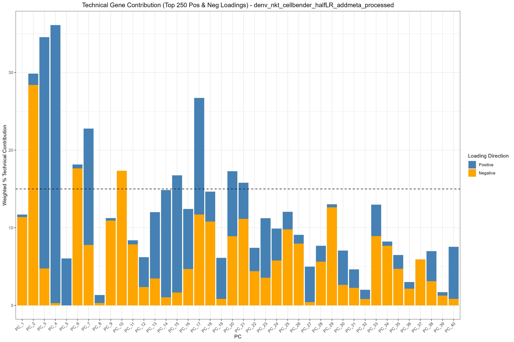
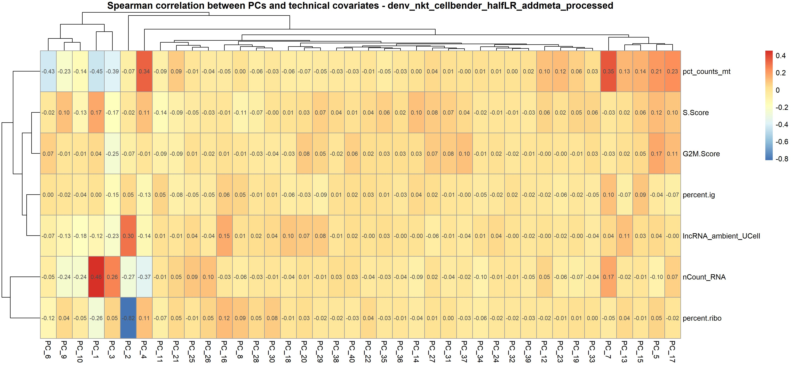

Diagnostic and Variable Evaluation
Chomchon Uansiri
Source:vignettes/OHMmy-diagnostics-evaluation.Rmd
OHMmy-diagnostics-evaluation.RmdIntroduction
Before clustering your single-cell data, it is critical to evaluate your Principal Components (PCs). You need to determine two things:
How many PCs to use: Where does the biological variance drop off?
What is driving the PCs: Are your top components driven by true biological cell states, or are they being hijacked by technical artifacts (like mitochondrial genes, ribosomal genes, or cell cycle phases)?
OHMmy provides a suite of automated diagnostic tools to
help you visualize and quantify technical noise within your
dimensionality reduction.
Part 1: Visualizing Component Variance and Loadings
First, we load our processed Seurat object (which has already undergone Normalization and PCA) and generate the standard visualizations to inspect the top genes driving each PC.
library(Seurat)
library(OHMmy)
seurat_obj <- readRDS("data/seurat_processed.rds")
out_dir <- "results/pca_diagnostics/"
# 1. Standard Elbow Plot to assess variance drop-off
ElbowPlot(seurat_obj, reduction = "pca.log", ndims = 40)
# 2. Generate Heatmaps for the top PCs
# This saves heatmaps of the top genes driving PCs 1-20 and 21-40
generate_dimheatmaps(
seurat_obj = seurat_obj,
sample_name = "MySample",
reduction = "pca.log",
pc_windows = list(1:20, 21:40),
output_dir = out_dir
)
# 3. Generate PC Loading Plots
# This plots the actual weight of the top genes for each PC
plot_vizdimloadings(
seurat_obj = seurat_obj,
sample_name = "MySample",
reduction = "pca.log",
pc_windows = list(1:20, 21:40),
output_dir = out_dir
)
Part 2: Quantifying Technical Gene Contributions
Often, PCs can be artificially driven by stress responses or ambient
contamination. We can define a list of “technical keywords” (e.g.,
mitochondrial MT-, ribosomal
RPS/RPL, or lncRNAs like MALAT1)
and let OHMmy calculate exactly how much of each PC is
driven by these gene families.
# Define standard technical and stress-related gene prefixes
tech_keys <- c("^MT-", "^RPL", "^RPS", "^IG[HKL]", "MALAT1", "NEAT1", "XIST")
# 1. Line Plot: Technical contribution across the top 40 PCs
plot_technical_contribution(
seurat_obj = seurat_obj,
sample_name = "MySample",
technical_keywords = tech_keys,
max_pcs = 40,
n_top_genes = 500,
cutoff = 15, # Highlight PCs where technical genes make up >15% of the weight
output_dir = out_dir
)
# 2. Stacked Bar Chart: Deeper look at technical distribution at varying gene depths
plot_stacked_technical_contribution(
seurat_obj = seurat_obj,
sample_name = "MySample",
reduction = "pca.log",
technical_keywords = tech_keys,
gene_depths = seq(0, 500, by = 20),
max_pcs = 40,
cutoff = 15,
output_dir = out_dir
)
Note: If these plots reveal that PC1 or PC2 is overwhelmingly driven by ribosomal or mitochondrial genes, you may need to go back to the normalization step and actively regress those variables out.
Part 3: Correlating PCs with Quality Control Metadata
Finally, we want to ensure our clustering won’t be driven by
sequencing depth (nCount_RNA) or cell cycle states
(S.Score, G2M.Score). OHMmy can
automatically correlate your metadata columns against the PC scores.
# Define the metadata columns you want to test
qc_metrics <- c("nCount_RNA", "pct_counts_mt", "percent.ribo", "S.Score", "G2M.Score")
# Generate correlation heatmaps between QC metrics and PCs
plot_pc_metadata_correlation(
seurat_obj = seurat_obj,
sample_name = "MySample",
reduction = "pca.log",
n_pcs = 40,
vars_to_test = qc_metrics,
output_dir = out_dir
)
If a PC shows a correlation close to 1.0 or
-1.0 with nCount_RNA, it means that component
is separating cells based purely on sequencing depth rather than
biology, indicating that further regression or a different normalization
strategy (like SCTransform) may be required.